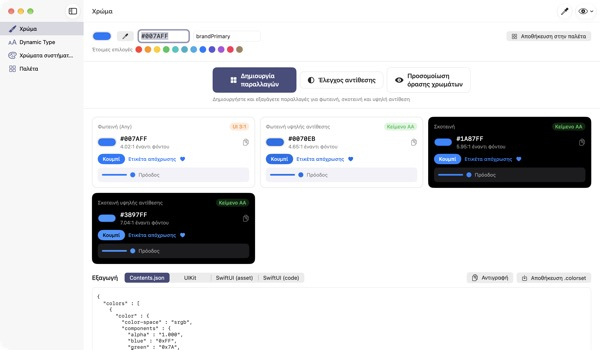
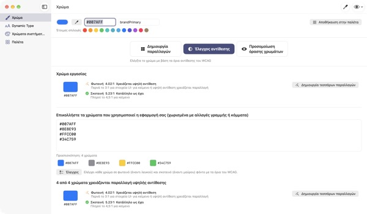
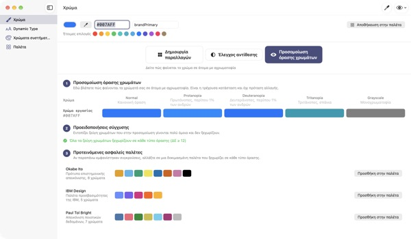
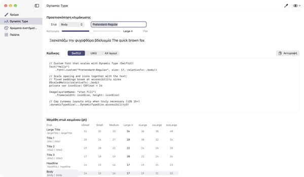

Ένα χρώμα μέσα,
τέσσερις εμφανίσεις έξω
Τα χρώματα συστήματος προσαρμόζονται μόνα τους στη σκούρα λειτουργία και στην Αύξηση αντίθεσης. Τα χρώματα της επωνυμίας σας όχι. Το TetraTint παίρνει ένα χρώμα φωτεινής λειτουργίας, φτιάχνει τις παραλλαγές Φωτεινή, Φωτεινή υψηλής αντίθεσης, Σκοτεινή και Σκοτεινή υψηλής αντίθεσης και τις εξάγει κατευθείαν στο Xcode.
Όλες οι λειτουργίες είναι δωρεάν. Απαιτεί macOS 14 ή νεότερο.

Δοκιμάστε το χρώμα της επωνυμίας σας
Επικολλήστε μια τιμή hex ή πατήστε μια έτοιμη επιλογή. Με τον ίδιο υπολογισμό με την εφαρμογή, βλέπετε αμέσως τις τέσσερις παραλλαγές και την αντίθεσή τους.
Χάθηκε ποτέ το χρώμα της επωνυμίας σας στη σκούρα λειτουργία;
Το μπλε που διαλέξατε στη φωτεινή λειτουργία φαίνεται θολό πάνω στο μαύρο, κι όσοι έχουν ενεργή την Αύξηση αντίθεσης μόλις που διαβάζουν το κείμενο. Να ψάχνετε χρώμα για κάθε εμφάνιση και να μετράτε την αντίθεση με το χέρι κοστίζει μισή μέρα. Το TetraTint βγάζει τις παραλλαγές όπως αλλάζουν τα χρώματα συστήματος από εμφάνιση σε εμφάνιση και δείχνει αμέσως αν περνά η καθεμία.
Ελέγξτε όλα τα χρώματά σας μαζί
Επικολλήστε όλη τη λίστα hex της εφαρμογής σας και κάθε χρώμα κατατάσσεται: κατάλληλο ως έχει, χρειάζεται υψηλή αντίθεση ή μόνο για διακόσμηση.
Με ένα κλικ ένα προβληματικό χρώμα γίνεται τέσσερις παραλλαγές στην παλέτα σας. Βοηθά και στην προετοιμασία της σήμανσης προσβασιμότητας Επαρκής αντίθεση στο App Store.

Δείτε με τα μάτια όσων έχουν αχρωματοψία
Δείτε την παλέτα με πρωτανοπία, δευτερανοπία, τριτανοπία και σε κλίμακα του γκρι, με προειδοποίηση για ζεύγη που δύσκολα ξεχωρίζουν.
Φορτώστε με ένα κλικ τις ασφαλείς για αχρωματοψία παλέτες Okabe–Ito, IBM και Paul Tol, ή πατήστε το κουμπί με το μάτι πάνω δεξιά για να δείτε έτσι όλη την εφαρμογή.

Και οι δικές σας γραμματοσειρές ακολουθούν το μέγεθος κειμένου
Δείτε τα 11 στυλ κειμένου σε 7 μεγέθη και σύρετε ένα ρυθμιστικό για να δείτε τα πραγματικά μεγέθη.
Γράψτε το όνομα PostScript της γραμματοσειράς και πάρτε κώδικα για UIKit, SwiftUI και @ScaledMetric, καθώς και κώδικα που αλλάζει τη διάταξη με μεγάλο κείμενο.

Τρία βήματα για να ξεκινήσετε
- 1
Δώστε ένα βασικό χρώμα
Επικολλήστε hex, πάρτε χρώμα από οπουδήποτε στην οθόνη με το σταγονόμετρο ή διαλέξτε έτοιμη επιλογή.
- 2
Ελέγξτε τις τέσσερις παραλλαγές
Δείτε τα σήματα αντίθεσης και ρυθμίστε με τον επιλογέα όσες ξεφεύγουν από την επωνυμία.
- 3
Εξαγωγή στο Xcode
Αντιγράψτε ή αποθηκεύστε ως Contents.json, .colorset ή κώδικα UIKit και SwiftUI.
Πώς φτιάχνονται οι παραλλαγές και τι σημαίνουν τα σήματα
- Φωτεινή (Any)
- Το χρώμα σας όπως το δώσατε
- Φωτεινή υψηλής αντίθεσης
- Λίγο πιο κορεσμένο, σκουραίνει ώσπου να φτάσει 4.5:1 σε λευκό
- Σκοτεινή
- Λίγο πιο φωτεινό και ζωηρό (φωτεινότητα +5, κορεσμός +3)
- Σκοτεινή υψηλής αντίθεσης
- Ανοίγει ώσπου να φτάσει 7:1 σε μαύρο
- Κείμενο AA
- Αντίθεση με το φόντο τουλάχιστον 4.5:1, κατάλληλο για κείμενο
- UI 3:1
- Τουλάχιστον 3:1, αρκεί για κουμπιά και εικονίδια, όχι για κείμενο
- Χαμηλή
- Κάτω από 3:1, μη το χρησιμοποιείτε για κείμενο, εικονίδια ή καταστάσεις
- Εξαγωγή
- Contents.json · .colorset · UIKit · SwiftUI, ή όλη η παλέτα σε ένα .xcassets
Οι τιμές αναφοράς των χρωμάτων συστήματος προέρχονται από τις Human Interface Guidelines της Apple και μπορεί να αλλάξουν με ενημερώσεις του συστήματος. Στην εφαρμογή που δημοσιεύετε, χρησιμοποιήστε τα API χρωμάτων συστήματος.
Συχνές ερωτήσεις
Είναι πραγματικά δωρεάν;
Ναι. Όλες οι λειτουργίες είναι δωρεάν, χωρίς λογαριασμό και χωρίς διαφημίσεις. Αν σας βοήθησε, μπορείτε να αφήσετε φιλοδώρημα από τις Ρυθμίσεις· δεν ξεκλειδώνει τίποτα.
Οι παραλλαγές που βγήκαν δεν ταιριάζουν στην επωνυμία μας.
Ρυθμίστε κάθε παραλλαγή με τον επιλογέα χρώματος της κάρτας της. Η Επαναδημιουργία όλων πετά τις χειροκίνητες αλλαγές και τα ξαναβγάζει όλα από το βασικό χρώμα.
Πώς υπολογίζονται οι παραλλαγές;
Ακολουθούν τον τρόπο που αλλάζουν πραγματικά τα χρώματα συστήματος της Apple ανά εμφάνιση: λίγο πιο φωτεινά και ζωηρά στη σκοτεινή, τουλάχιστον 4.5:1 σε λευκό στη φωτεινή υψηλής αντίθεσης και τουλάχιστον 7:1 σε μαύρο στη σκοτεινή υψηλής αντίθεσης.
Τι σημαίνει μια προειδοποίηση στην προσομοίωση όρασης χρωμάτων;
Ότι σε αυτή την προσομοίωση η διαφορά δύο χρωμάτων (ΔE) πέφτει κάτω από 12 και δύσκολα ξεχωρίζουν. Μη βασίζεστε μόνο στο χρώμα: προσθέστε εικονίδια, μοτίβα ή ετικέτες, ή αλλάξτε σε ασφαλή παλέτα.
Πώς κάνω μια δική μου γραμματοσειρά να υποστηρίζει Dynamic Type;
Στο Dynamic Type γράψτε το όνομα PostScript της γραμματοσειράς και διαλέξτε στυλ για να πάρετε κώδικα UIKit, SwiftUI και @ScaledMetric. Στα μεγέθη προσβασιμότητας το Body ξεπερνά το τριπλάσιο του κανονικού, οπότε αποφύγετε σταθερά ύψη και το lineLimit(1).
Τα χρώματα που εξήγαγα φαίνονται διαφορετικά από τα χρώματα συστήματος στην εφαρμογή μου.
Οι τιμές αναφοράς προέρχονται από τις Human Interface Guidelines και μπορεί να αλλάζουν από έκδοση σε έκδοση. Για τα χρώματα συστήματος χρησιμοποιείτε πάντα τα API UIColor ή Color.
Πού αποθηκεύεται η παλέτα μου;
Μόνο στο Mac σας. Τίποτα δεν συγχρονίζεται σε υπηρεσίες νέφους ούτε στέλνεται πουθενά. Δείτε την πολιτική απορρήτου για λεπτομέρειες.
Αποθηκεύεται το χρώμα που παίρνω με το σταγονόμετρο;
Όχι. Διαβάζεται μόνο η τιμή του χρώματος στο σημείο που επιλέγετε και γίνεται χρώμα εργασίας. Καμία εικόνα της οθόνης δεν αποθηκεύεται ούτε στέλνεται.
Σε ποια Mac λειτουργεί;
Σε macOS 14 (Sonoma) ή νεότερο. Στην εξαγωγή επιλέγετε εσείς πού θα αποθηκευτούν τα αρχεία.
Σφάλματα, ιδέες ή ερωτήσεις; Γράψτε στο leeo@kakao.com. Συνήθως απαντάμε σε 2–3 ημέρες.